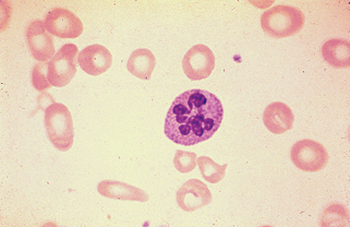

Peripheral blood smear showing megaloblastic changes

Peripheral blood smear showing a hypersegmented neutrophil (seven lobes) and macroovalocytes, a pattern that can be seen with vitamin B12 (cobalamin) or folate deficiency.
Courtesy of Stanley L Schrier, MD.
Graphic 58820 Version 5.0